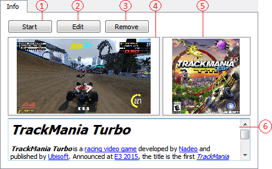

Таб Виджет
Содержание

- Кнопка "Старт". Запускает выбранную игру/мод.
- Кпопка "Редактирование". Открывает окно редактирования выбранной игры/мода.
- Кпока "Удаление". Удалает выбранную игру/мод из списка и из базы данных, а также удалет папку игры из папки данного приложения со всем её содержимым (скриншоты, обложки, музыку).
- Виджет отображения скриншотов и других изображений находящихся в папке соответсвующей игры/мода .../image/screenshots в папке данного приложения (пример для игр, C:\GameTree\Games\T\Trackmania Turbo\image\screenshots).
- Виджет отображения обложек и других изображений находящихся в папке соответсвующей игры/мода .../image/covers в папке данного приложения (пример для модов, C:\GameTree\Games\H\Heroes of Might & Magic III\mods\Shadow of Death\image\covers).
- Виджет для отображения текстовой информации об игре/моде в виде .html файлов находящихся в папке соответсвующей игры/мода (пример для игры C:\GameTree\Games\T\Trackmania Turbo).